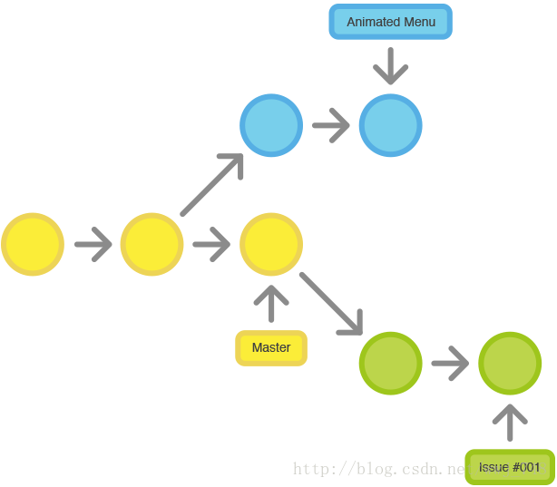
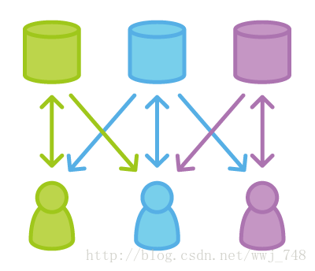
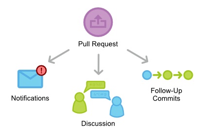

<!DOCTYPE HTML>
<html lang="zh-CN">
<head><meta name="generator" content="Hexo 3.8.0">
    <!--Setting-->
    <meta charset="UTF-8">
    <meta name="viewport" content="width=device-width, user-scalable=no, initial-scale=1.0, maximum-scale=1.0, minimum-scale=1.0">
    <meta http-equiv="X-UA-Compatible" content="IE=Edge,chrome=1">
    <meta http-equiv="Cache-Control" content="no-siteapp">
    <meta http-equiv="Cache-Control" content="no-transform">
    <meta name="renderer" content="webkit|ie-comp|ie-stand">
    <meta name="apple-mobile-web-app-capable" content="我的博客 - blog">
    <meta name="apple-mobile-web-app-status-bar-style" content="black">
    <meta name="format-detection" content="telephone=no,email=no,adress=no">
    <meta name="browsermode" content="application">
    <meta name="screen-orientation" content="portrait">
    <link rel="dns-prefetch" href="https://lives.xtcgch.ink">
    <!--SEO-->

<meta name="description" content="脑容量不够，笔记来凑">


<meta name="robots" content="all">
<meta name="google" content="all">
<meta name="googlebot" content="all">
<meta name="verify" content="all">
    <!--Title-->


<title>【求职】求职之版本管理篇 | 我的博客 - blog</title>


    <link rel="alternate" href="/atom.xml" title="我的博客 - blog" type="application/atom+xml">


    <link rel="icon" href="https://blog.xtcgch.ink/img/background/海绵宝宝.ico">

    


<link rel="stylesheet" href="/css/bootstrap.min.css?rev=3.3.7">
<link rel="stylesheet" href="/css/font-awesome.min.css?rev=4.5.0">
<link rel="stylesheet" href="/css/style.css?rev=@@hash">


    


    

</head>

</html>
<!--[if lte IE 8]>
<style>
    html{ font-size: 1em }
</style>
<![endif]-->
<!--[if lte IE 9]>
<div style="ie">你使用的浏览器版本过低，为了你更好的阅读体验，请更新浏览器的版本或者使用其他现代浏览器，比如Chrome、Firefox、Safari等。</div>
<![endif]-->

<body>
    <header class="main-header" style="background-image:url(https://blog.xtcgch.ink/img/head-bg.jpg)">
    <div class="main-header-box">
        <a class="header-avatar" href="/" title="unistd68">
            
        </a>
        <div class="branding">
        	<!--<h2 class="text-hide">Snippet主题,从未如此简单有趣</h2>-->
            
                <h2> 脑容量不够，笔记来凑 </h2>
            
    	</div>
    </div>
</header>
    <nav class="main-navigation">
    <div class="container">
        <div class="row">
            <div class="col-sm-12">
                <div class="navbar-header"><span class="nav-toggle-button collapsed pull-right" data-toggle="collapse" data-target="#main-menu" id="mnav">
                    <span class="sr-only"></span>
                        <i class="fa fa-bars"></i>
                    </span>
                    <a class="navbar-brand" href="https://lives.xtcgch.ink">我的博客 - blog</a>
                </div>
                <div class="collapse navbar-collapse" id="main-menu">
                    <ul class="menu">
                        
                            <li role="presentation" class="text-center">
                                <a href="/"><i class="fa "></i>主页</a>
                            </li>
                        
                            <li role="presentation" class="text-center">
                                <a href="/categories/原理/"><i class="fa "></i>原理</a>
                            </li>
                        
                            <li role="presentation" class="text-center">
                                <a href="/categories/实战/"><i class="fa "></i>实战</a>
                            </li>
                        
                            <li role="presentation" class="text-center">
                                <a href="/categories/开源/"><i class="fa "></i>开源</a>
                            </li>
                        
                            <li role="presentation" class="text-center">
                                <a href="/categories/其他/"><i class="fa "></i>其他</a>
                            </li>
                        
                            <li role="presentation" class="text-center">
                                <a href="/archives/"><i class="fa "></i>时间轴</a>
                            </li>
                        
                    </ul>
                </div>
            </div>
        </div>
    </div>
</nav>
    <section class="content-wrap">
        <div class="container">
            <div class="row">
                <main class="col-md-8 main-content m-post">
                    <p id="process"></p>
<article class="post">
    <div class="post-head">
        <h1 id="【求职】求职之版本管理篇">
            
	            【求职】求职之版本管理篇
            
        </h1>
        <div class="post-meta">
    
    
    <span class="categories-meta fa-wrap">
        <i class="fa fa-folder-open-o"></i>
        <!-- <a href="https://blog.xtcgch.ink/categories/求职"> -->
        <a href="/categories/求职">
            求职
        </a>
    </span>
    

    
    <span class="fa-wrap">
        <i class="fa fa-tags"></i>
        <span class="tags-meta">
            
                
                    <!-- <a href="https://blog.xtcgch.ink/tags/面试" title='面试'> -->
                    <a href="/tags/面试" title="面试">
                        面试
                    </a>
                
                    <!-- <a href="https://blog.xtcgch.ink/tags/GIT" title='GIT'> -->
                    <a href="/tags/GIT" title="GIT">
                        GIT
                    </a>
                
                    <!-- <a href="https://blog.xtcgch.ink/tags/SVN" title='SVN'> -->
                    <a href="/tags/SVN" title="SVN">
                        SVN
                    </a>
                
            
        </span>
    </span>
    

    
        
        <span class="fa-wrap">
            <i class="fa fa-clock-o"></i>
            <span class="date-meta">2021/09/10</span>
        </span>
        
    
</div>

            
            
    </div>
    
    <div class="post-body post-content">
        <p><strong>摘要：</strong>这是摘要！</p>
<a id="more"></a>
<h2 id="git工作流"><a href="#git工作流" class="headerlink" title="git工作流"></a>git工作流</h2><h3 id="Git常见工作流"><a href="#Git常见工作流" class="headerlink" title=" Git常见工作流"></a><span> Git常见工作流</span></h3><ol>
<li>集中式工作流</li>
</ol>
<p></p>
<ol start="2">
<li>功能开发工作流</li>
</ol>
<p></p>
<ol start="3">
<li>Gitflow工作流</li>
</ol>
<p></p>
<ol start="4">
<li>Forking工作流</li>
</ol>
<p></p>
<ol start="5">
<li>Pull Requests工作流（特殊，不能算独立的工作流）</li>
</ol>
<p></p>
<h3 id="Git主要优点"><a href="#Git主要优点" class="headerlink" title=" Git主要优点"></a><span> Git主要优点</span></h3><ul>
<li>分布式存储，本地仓库包含了远程仓库的所有内容。</li>
<li>安全性高，远程仓库文件丢失了也不怕。</li>
<li>优秀的分支模型，创建/合并分支都非常快速便捷。</li>
</ul>
<h3 id="Git分支管理"><a href="#Git分支管理" class="headerlink" title=" Git分支管理"></a><span> Git分支管理</span></h3><p>我们在实际工作中会创建很多分支以便于不同场景下的开发，但是如果没有分支规范就会造成分支杂乱，大家往往也搞不清楚某一个分支是在做什么，下面我们就介绍一下我们常用的并且推荐大家使用的分支类型。</p>
<h3 id="Git分支类型"><a href="#Git分支类型" class="headerlink" title=" Git分支类型"></a><span> Git分支类型</span></h3><p><strong>master 分支</strong></p>
<p>master 为产品主分支，该分支为只读唯一分支，也是用于部署生产环境的分支，需确保master分支的稳定性。<br>master 分支一般由release分支或hotfix分支合并，任何情况下都不应该直接修改master分支代码。<br>产品的功能全部实现后，最终在master分支对外发布，另外所有在master分支的推送应该打标签（tag）做记录，方便追溯。<br>master 分支不可删除。</p>
<p><strong>develop 分支</strong></p>
<p>develop 为主开发分支，基于master分支创建，始终保持最新完成功能的代码以及bug修复后的代码。<br>develop 分支为只读唯一分支，只能从其他分支合并，不可以直接在该分支做功能开发或bug修复。<br>一般开发新功能时，feature分支都是基于develop分支下创建的。<br>develop 分支包含所有要发布到下一个release的代码。<br>feature功能分支完成后, 开发人员需合并到develop分支(不推送远程)，需先将develop分支合并到feature，解决完冲突后再合并到develop分支。<br>当所有新功能开发完成后，开发人员并自测完成后，此时从develop拉取release分支，进行提测。<br>release或hotfix 分支上线完成后, 开发人员需合并到develop分支并推送远程。<br>develop 分支不可删。</p>
<p><strong>feature 分支</strong></p>
<p>feature 分支通常为新功能或新特性开发分支，以develop分支为基础创建feature分支。<br>分支命名: feature/ 开头的为新特性或新功能分支，建议的命名规则: feature/user_createtime_feature，例如：feature/ftd_20201018_alipay，含义为：开发人员ftd在2020年10月18日时创建了一个支付宝支付的功能分支。<br>新特性或新功能开发完成后，开发人员需合到develop分支。<br>feature 分支可同时存在多个，用于团队中多个功能同时开发。<br>feature 分支属于临时分支，功能完成后可选删除。</p>
<p><strong>release 分支</strong></p>
<p>release 分支为预上线分支，基于本次上线所有的feature分支合并到develop分支之后，从develop分支创建。<br>分支命名: release/ 开头的为预上线分支，建议的命名规则: release/version_publishtime，例如：release/v2.1.1_20201018，含义为：版本号v2.1.1计划于2020年10月18日时发布。<br>release 分支主要用于提交给测试人员进行功能测试。发布提测阶段，会以release分支代码为基准进行提测。测试过程中发现的bug在本分支进行修复，上线完成后需合并到develop/master分支并推送远程。<br>release 分支属于临时分支，产品上线后可选删除。<br>❝ 当有一组feature开发完成后，首先开发人员会各自将最新功能代码合并到develop分支。进入提测阶段时，开发组长在develop分支上创建release分支。 如果在测试过程中发现bug需要修复，则直接由开发者在release分支修复并提交。当测试完成后，开发组长将release分支合并到master和develop分支，此时master为最新可发布代码，用作产品发布上线。<br>❞<br><strong>hotfix 分支</strong></p>
<p>hotfix 分支为线上bug修复分支或叫补丁分支，主要用于对线上的版本进行bug修复。<br>分支命名: hotfix/ 开头的为修复分支，它的命名规则与 feature 分支类似，建议的命名规则: hotfix/user_createtime_hotfix，例如：hotfix/ftd_20201018_alipaybugfix，含义为：开发人员ftd在2020年10月18日时创建了一个支付宝支付bug修复的分支。<br>hotfix 分支用于线上出现紧急问题时，需要及时修复，以master分支为基线，创建hotfix分支。当问题修复完成后，需要合并到master分支和develop分支并推送远程。<br>所有hotfix分支的修改会进入到下一个release。<br>hotfix 分支属于临时分支，bug修复上线后可选删除。<br>以上就是在工作中常用到的6种分支类型，覆盖了开发中的常见场景，大家也可以根据实际工作情况进行调整，重点是让团队小伙伴都能对整个分支的类型及作用了解即可。</p>
<p>分支创建好了，小伙伴们也都开始按照流程开始开发了，但是在日常开发中由于缺少对于commit message的约束，导致填写内容随意、质量参差不齐，可读性低亦难以维护。在项目中引入commit message规范已是迫在眉睫。书写良好的commit message能大大提高代码维护的效率。</p>
<h3 id="Git-Flow工作流"><a href="#Git-Flow工作流" class="headerlink" title=" Git Flow工作流"></a><span> Git Flow工作流</span></h3><p>我们现在已经了解了Git的分支，包括分支有哪些类型，什么情况下使用什么类型的分支，以及提交的格式规范等。不过往往在一个团队人数较多，创建的分支也比较多的时候，还是会带来很多分支操作上的困扰。那有没有一个什么好的流程来规范大家呢，针对这些问题，建议大家使用Git Flow的工作流模式。</p>
<h3 id="Git-Flow-流程图"><a href="#Git-Flow-流程图" class="headerlink" title=" Git Flow 流程图"></a><span> Git Flow 流程图</span></h3><p>「1，主分支流程」</p>
<p>master分支记录了每次版本发布历史和tag标记。<br>develop分支记录了所有开发的版本历史。<br>develop分支仅第一次创建时从master分支拉取。</p>
<p>「2，开发流程」</p>
<p>feature分支是从develop分支拉取的分支。<br>每个feature完成后需合并到develop分支。</p>
<p>「3，提测发布流程」</p>
<ul>
<li>release分支是在所有功能开发自测完成后，从develop分支拉取的分支。</li>
<li>release分支一旦创建后，通常不再从develop分支拉取，该分支只做bug修复，文档生成和其他面向发布的任务。</li>
<li>release分支测试完成，达到上线标准后，需合并回master分支和develop分支。</li>
</ul>
<p>「4，bug修复流程」</p>
<ul>
<li>hotfix分支是在线上出现bug之后，从master分支拉取的分支。</li>
<li>hotfix分支测试完成后，需合并回master分支和develop分支。</li>
</ul>
<hr>
<p><strong>历史分支</strong></p>
<p>使用两个分支来记录项目的历史。 master分支记录了正式发布的历史，而develop分支作为功能的集成分支。因此，master分支的每次提交都应分配一个版本号。</p>
<p><strong>功能分支</strong></p>
<p>功能分支是从develop中checkout出来的新分支，每个功能对应一个分支。</p>
<p>假设开发a功能：<br><figure class="highlight plain"><table><tr><td class="gutter"><pre><span class="line">1</span><br></pre></td><td class="code"><pre><span class="line">git checkout -b feature-a develop</span><br></pre></td></tr></table></figure></p>
<p>当新功能完成时，合并回develop分支。<br><figure class="highlight plain"><table><tr><td class="gutter"><pre><span class="line">1</span><br><span class="line">2</span><br><span class="line">3</span><br><span class="line">4</span><br></pre></td><td class="code"><pre><span class="line">git checkout develop</span><br><span class="line">git merge --no-ff feature-a</span><br><span class="line">git push</span><br><span class="line">git branch -d feature-a</span><br></pre></td></tr></table></figure></p>
<p><strong>发布分支</strong></p>
<p>当develop分支开发到需要发布时，从develop分支拉出一个发布分支，命名为release-<em>或release/</em>。</p>
<figure class="highlight plain"><table><tr><td class="gutter"><pre><span class="line">1</span><br></pre></td><td class="code"><pre><span class="line">git checkout -b release-0.1 develop</span><br></pre></td></tr></table></figure>
<p>该分支用于发布循环，只做bug修复、文档生成等面向发布的任务。新功能不再添加到这个分支上。<br>一旦发布完成，把发布分支merge到master分支上。</p>
<figure class="highlight plain"><table><tr><td class="gutter"><pre><span class="line">1</span><br><span class="line">2</span><br><span class="line">3</span><br></pre></td><td class="code"><pre><span class="line">git checkout master</span><br><span class="line">git merge --no-ff release-0.1</span><br><span class="line">git push</span><br></pre></td></tr></table></figure>
<p>打tag记录版本号，方便跟踪每次发布。</p>
<figure class="highlight plain"><table><tr><td class="gutter"><pre><span class="line">1</span><br><span class="line">2</span><br></pre></td><td class="code"><pre><span class="line">git tag v0.1</span><br><span class="line">git push --tags</span><br></pre></td></tr></table></figure>
<p>把这些从新建发布分支以来做的修改merge到develop分支。</p>
<figure class="highlight plain"><table><tr><td class="gutter"><pre><span class="line">1</span><br><span class="line">2</span><br><span class="line">3</span><br></pre></td><td class="code"><pre><span class="line">git checkout develop</span><br><span class="line">git merge --no-ff release-0.1</span><br><span class="line">git push</span><br></pre></td></tr></table></figure>
<p>最后删除发布分支<br><figure class="highlight plain"><table><tr><td class="gutter"><pre><span class="line">1</span><br></pre></td><td class="code"><pre><span class="line">git branch -d release-0.1</span><br></pre></td></tr></table></figure></p>
<p><strong>维护分支/热修复</strong></p>
<p>当线上版本出现bug时，就需要用到维护分支，它用于快速给产品发布版本打补丁。</p>
<p>从master分支拉一个维护分支（这是唯一从master分支拉出来的分支）。<br><figure class="highlight plain"><table><tr><td class="gutter"><pre><span class="line">1</span><br></pre></td><td class="code"><pre><span class="line">git checkout -b hotfix master</span><br></pre></td></tr></table></figure></p>
<p>修复完成后，马上合并回master和develop。</p>
<figure class="highlight plain"><table><tr><td class="gutter"><pre><span class="line">1</span><br><span class="line">2</span><br><span class="line">3</span><br><span class="line">4</span><br><span class="line">5</span><br><span class="line">6</span><br><span class="line">7</span><br></pre></td><td class="code"><pre><span class="line">git checkout master</span><br><span class="line">git merge --no-ff hotfix</span><br><span class="line">git push</span><br><span class="line">git checkout develop</span><br><span class="line">git merge --no-ff develop</span><br><span class="line">git push </span><br><span class="line">git branch -d hotfix</span><br></pre></td></tr></table></figure>
<p>master用新版本号打tag</p>
<figure class="highlight plain"><table><tr><td class="gutter"><pre><span class="line">1</span><br><span class="line">2</span><br></pre></td><td class="code"><pre><span class="line">git tag v0.2 </span><br><span class="line">git push --tags</span><br></pre></td></tr></table></figure>
<p></p>
<p><strong>优点</strong></p>
<ul>
<li>单个功能独立开发，并行开发互不干扰</li>
<li>master和develop分支分别记录发布和功能开发的历史</li>
<li>由于有发布分支，其他暂不发布的功能的开发不受发布的影响，可以继续提交</li>
<li>维护分支能快速打补丁，不影响正在开发的功能</li>
</ul>
<p><strong>缺点</strong></p>
<ul>
<li>复杂，分支繁多</li>
<li>Git GUI不支持，纯命令行</li>
<li>对开发者要求高（理解工作流，熟悉Git命令）</li>
<li>所有功能分支基于不稳定的develop</li>
<li>需要维护两个长期分支master和develop</li>
</ul>
<h3 id="Git-Flow实战"><a href="#Git-Flow实战" class="headerlink" title=" Git Flow实战"></a><span> Git Flow实战</span></h3><p>Git Flow的流程搞清楚后，我们下面开始实际的项目实战，假设我们现在有一个商城的项目，并且我们已经建好了Git仓库。</p>
<p>我们通过命令行和图形界面的方式分别向大家展示如何使用Git Flow工作流。</p>
<h3 id="Git-Flow-命令示例"><a href="#Git-Flow-命令示例" class="headerlink" title=" Git Flow 命令示例"></a><span> Git Flow 命令示例</span></h3><p><strong>开始 Feature</strong></p>
<figure class="highlight plain"><table><tr><td class="gutter"><pre><span class="line">1</span><br><span class="line">2</span><br><span class="line">3</span><br><span class="line">4</span><br><span class="line">5</span><br></pre></td><td class="code"><pre><span class="line"># 创建feature分支</span><br><span class="line">git flow feature start ftd_20201018_wechatpay</span><br><span class="line"></span><br><span class="line"># 指定当前分支pull的源为develop</span><br><span class="line">git branch --set-upstream-to=origin/develop feature/ftd_20201018_wechatpay</span><br></pre></td></tr></table></figure>
<p><strong>完成 Feature</strong><br><figure class="highlight plain"><table><tr><td class="gutter"><pre><span class="line">1</span><br><span class="line">2</span><br><span class="line">3</span><br><span class="line">4</span><br><span class="line">5</span><br></pre></td><td class="code"><pre><span class="line"># 发布feature</span><br><span class="line">git flow feature publish ftd_20201018_wechatpay</span><br><span class="line"></span><br><span class="line"># 完成feature</span><br><span class="line">git flow feature finish ftd_20201018_wechatpay</span><br></pre></td></tr></table></figure></p>
<p><strong>开始 Release</strong><br><figure class="highlight plain"><table><tr><td class="gutter"><pre><span class="line">1</span><br></pre></td><td class="code"><pre><span class="line">git flow release start v1.0_20201031</span><br></pre></td></tr></table></figure></p>
<p><strong>完成 Release</strong><br><figure class="highlight plain"><table><tr><td class="gutter"><pre><span class="line">1</span><br></pre></td><td class="code"><pre><span class="line">git flow release finish v1.0_20201031</span><br></pre></td></tr></table></figure></p>
<p><strong>开始 Hotfix</strong><br><figure class="highlight plain"><table><tr><td class="gutter"><pre><span class="line">1</span><br></pre></td><td class="code"><pre><span class="line">git flow hotfix start ftd_20201031_bugfix</span><br></pre></td></tr></table></figure></p>
<p><strong>完成 Hotfix</strong><br><figure class="highlight plain"><table><tr><td class="gutter"><pre><span class="line">1</span><br></pre></td><td class="code"><pre><span class="line">git flow hotfix finish ftd_20201031_bugfix</span><br></pre></td></tr></table></figure></p>
<p>大家可以看到，简简单单几行命令就可以完成比较复杂的流程管理，如果对于命令行不太擅长的小伙伴还可以使用图形工具，这里推荐使用sourcetree，sourcetree也是著名的Git管理工具，可以大大方便我们对Git的操作和使用，下面就来介绍一下sourcetree中如何使用Git Flow。</p>
<p>❝ 注：以下内容为Windows版本的sourcetree为例，Mac类似。<br>❞<br>初始化GitFlow<br>打开sourcetree，选择想使用Git Flow工作流的项目，在右上角点击Git工作流按钮，如下图所示：</p>
<p><strong>开始 Release</strong></p>
<p><strong>完成 Release</strong></p>
<p><strong>Hotfix</strong><br>hotfix流程与上述流程操作方法类似</p>
<p><a href="https://fhxisdog.github.io/2020/04/git_work_flow/" title="git常见工作流" target="_blank" rel="noopener">参考文章：git常见工作流</a></p>
<hr>

    </div>
    
    <div class="post-footer">
        <div>
            
        </div>
        <div>
            
        </div>
    </div>
</article>

<div class="article-nav prev-next-wrap clearfix">
    
        <a href="/2021/09/13/开源之zeromq/" class="pre-post btn btn-default" title="【开源】开源之zeromq">
            <i class="fa fa-angle-left fa-fw"></i><span class="hidden-lg">上一篇</span>
            <span class="hidden-xs">【开源】开源之zeromq</span>
        </a>
    
    
        <a href="/2021/09/10/求职之操作系统篇/" class="next-post btn btn-default" title="【求职】求职之操作系统篇">
            <span class="hidden-lg">下一篇</span>
            <span class="hidden-xs">【求职】求职之操作系统篇</span><i class="fa fa-angle-right fa-fw"></i>
        </a>
    
</div>


    <div id="comments">
        
    
    <div id="vcomments" class="valine"></div>
    <script src="//cdn1.lncld.net/static/js/3.0.4/av-min.js"></script>
<script src="/assets/valine.min.js"></script>

    <script>
        new Valine({
            av: AV,
            el: '#vcomments',
            appId: 'XWA5gq7VCJybw7YQhf5HG20r-gzGzoHsz',
            appKey: '8FW1WEwrysHXaUD1bhGn2Rp8',
            placeholder: '说点什么吧',
            notify: true,
            verify: false,
            avatar: 'https://blog.xtcgch.ink/img/comment-avatar.jpg',
            meta: 'nick,mail'.split(','),
            pageSize: '10',
            path: window.location.pathname,
            lang: 'zh-CN'.toLowerCase()
        })
    </script>


    </div>


                </main>
                
                    <aside id="article-toc" role="navigation" class="col-md-4">
    <div class="widget">
        <h3 class="title">文章目录</h3>
        
            <ol class="toc"><li class="toc-item toc-level-2"><a class="toc-link" href="#git工作流"><span class="toc-text">git工作流</span></a><ol class="toc-child"><li class="toc-item toc-level-3"><a class="toc-link" href="#Git常见工作流"><span class="toc-text"> Git常见工作流</span></a></li><li class="toc-item toc-level-3"><a class="toc-link" href="#Git主要优点"><span class="toc-text"> Git主要优点</span></a></li><li class="toc-item toc-level-3"><a class="toc-link" href="#Git分支管理"><span class="toc-text"> Git分支管理</span></a></li><li class="toc-item toc-level-3"><a class="toc-link" href="#Git分支类型"><span class="toc-text"> Git分支类型</span></a></li><li class="toc-item toc-level-3"><a class="toc-link" href="#Git-Flow工作流"><span class="toc-text"> Git Flow工作流</span></a></li><li class="toc-item toc-level-3"><a class="toc-link" href="#Git-Flow-流程图"><span class="toc-text"> Git Flow 流程图</span></a></li><li class="toc-item toc-level-3"><a class="toc-link" href="#Git-Flow实战"><span class="toc-text"> Git Flow实战</span></a></li><li class="toc-item toc-level-3"><a class="toc-link" href="#Git-Flow-命令示例"><span class="toc-text"> Git Flow 命令示例</span></a></li></ol></li></ol>
        
    </div>
</aside>

                
            </div>
        </div>
    </section>
    <footer class="main-footer">
    <div class="container">
        <div class="row">
        </div>
    </div>
</footer>

<a id="back-to-top" class="icon-btn hide">
	<i class="fa fa-chevron-up"></i>
</a>


    <div class="copyright">
    <div class="container">
        <div class="row">
            <div class="col-sm-12">
                <div class="busuanzi">
    
</div>

            </div>
            <div class="col-sm-12">
                <span>Copyright &copy; 2018
                </span> |
                <span>
                    Powered by <a href="//hexo.io" class="copyright-links" target="_blank" rel="nofollow">Hexo</a>
                </span> |
                <span>
                    Theme by <a href="//github.com/shenliyang/hexo-theme-snippet.git" class="copyright-links" target="_blank" rel="nofollow">Snippet</a>
                </span>
            </div>
        </div>
    </div>
</div>


<script src="/js/app.js?rev=@@hash"></script>

</body>
</html>